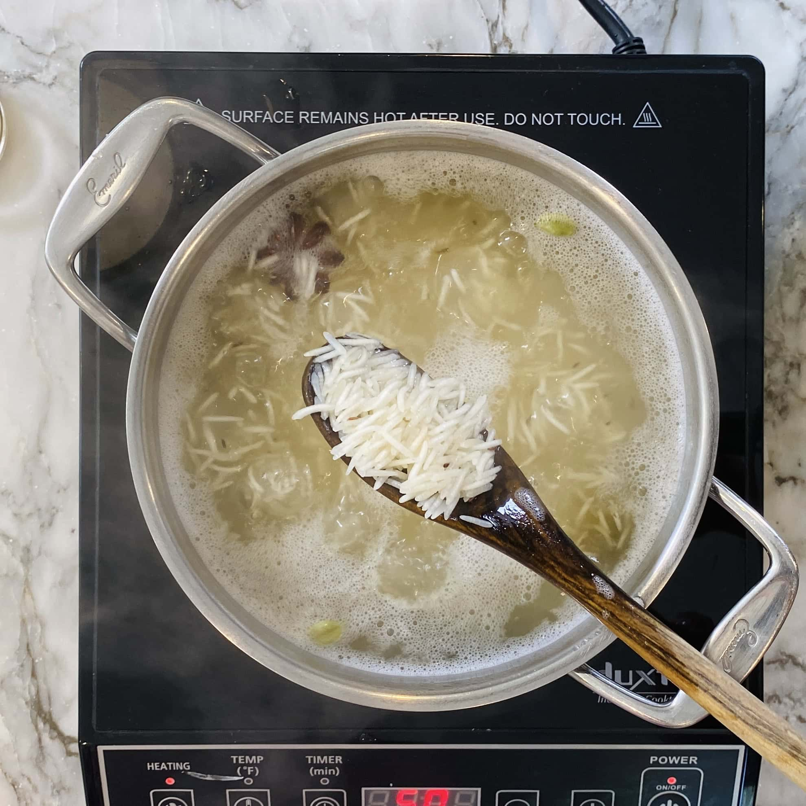

home
Biryani

Biryani-recipe
Biryani is a delicious rice dish peppered with scrumptious spices like saffron and cumin and further layered with spiced meat or veggie protein.
Typically, this layered rice dish is enriched with added yogurt or ghee, a clarified butter, for an extra boost of luxurious flavor.
Biryani is prepared from basmati rice mixed with several spices and cooked in a special way. Chicken Biryani, Mutton Biryani and Veg Biryani are some of the variants of this delicious dish.
This dish is my favourite because it has a lip-smacking flavour, and I love to eat it at least once a week.
Biryani-ingredients
- basmati rice
- chicken
- whole spices
- ground spices
- onions
- ghee
- herbs
Steps for cooking
- Marinate the Chicken
Make the marinade by mixing yogurt, ginger, garlic, turmeric, red chili powder, garam masala, salt, mint leaves, and lemon juice.
Add chicken and coat evenly with the marinade. Keep in the refrigerator for at least 30 minutes. You can marinate the chicken overnight too.
While the chicken is marinating, rinse and drain the rice 2 to 3 times, then soak in water for 20 minutes.
- Crispy Onions AKA Birira
While the rice is soaking, add ghee to a heavy-bottomed pan and add onions.
On medium heat, fry the onions stirring frequently until they start to turn golden brown - about 15 to 20 minutes. Remove the fried onions from the pan, leaving the excess ghee behind as we will use this pan to cook the chicken.
- Parboil the rice
In a medium pot add 8 cups of water. Add cumin seeds, bay leaves, star anise, cardamom, cloves, and salt to the rice and bring the to a boil on high heat.
Drain the soaked rice and add it to the boiling water. Bring the rice to a full boil on high heat. Lower the heat to medium and cook uncovered for 5 to 6 minutes or until the rice is about 90% cooked. Drain the rice promptly and reserve.

- Cook the chicken and layer the rice
To the pan with the remaining ghee, add the marinated chicken. Cook on medium heat for 8 to 10 minutes, turning halfway through.
Then, gently layer the partially cooked rice over the chicken
Top with caramelized onions and saffron-infused milk.
Cover the pot and seal it with aluminum foil, then place some weight on top of the lid. Cook on low heat for 20 minutes, this is the steam or "Dum" cooking step. Turn the heat off and wait another 10 minutes before opening the pot.